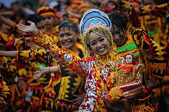
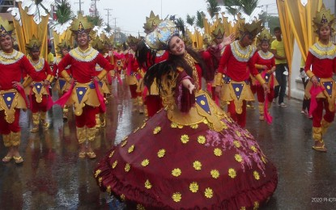
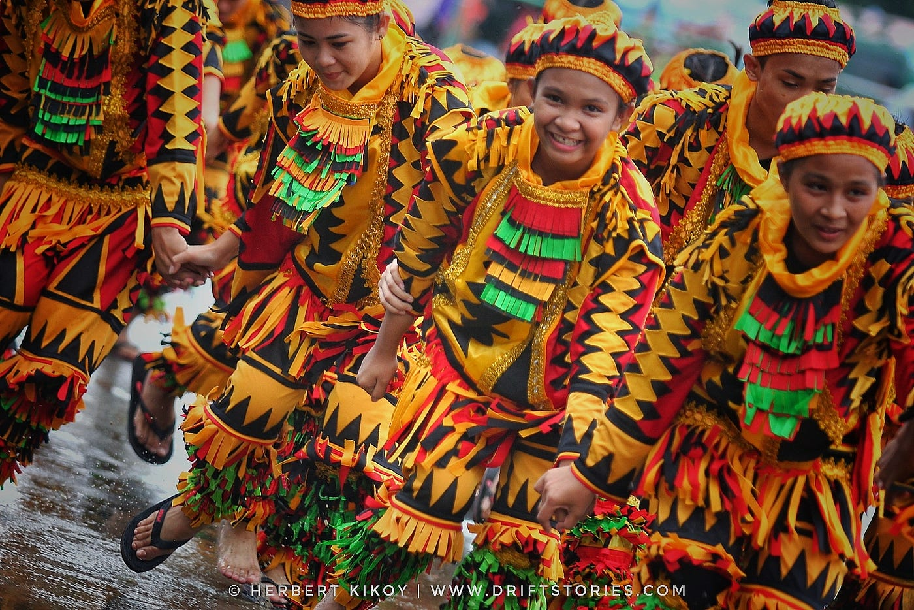
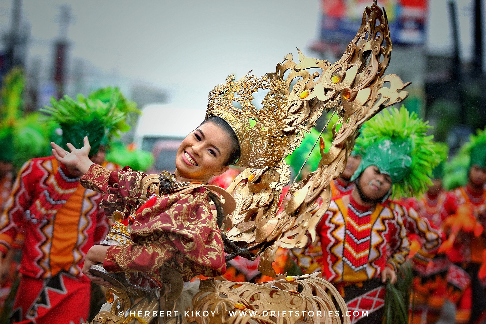

The Kahimunan Festival is the grand annual celebration of Bislig. The word “Kahimunan” means gathering, perfectly reflecting the festival’s purpose of bringing people together in unity and celebration.


💃 1. Street Dancing Competition
The highlight of the festival is the energetic street dancing, where participants wear vibrant costumes inspired by indigenous and coastal life. Performances usually tell stories about Bislig’s history and traditions.
🎉 2. Civic Parade and Events
There are colorful parades, beauty pageants, concerts, and sports activities that involve the whole community.
🎶 3. Cultural Shows
Local talents perform traditional dances, music, and theatrical presentations that reflect the identity of Bislig and its people.
“Kahimunan” comes from a local term meaning “gathering or coming together.” The festival celebrates:
- The founding anniversary of Bislig
- Unity among residents
- Pride in local culture and heritage


- Showcases Bislig’s rich culture and traditions
- Encourages tourism in Surigao del Sur
- Strengthens community spirit and unity
The Kahimunan Festival is celebrated every September, aligning with Bislig’s cityhood anniversary.